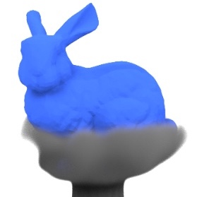
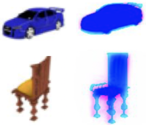

Journal papers

"A Monte Carlo Method for Fluid Simulation"
D. Rioux-Lavoie, R. Sugimoto, T. Özdemir, N. H. Shimada, C. Batty, D. Nowrouzezahrai, and T. Hachisuka
ACM SIGGRAPH Asia 2022, 2022 Dec. (4 cited)
Project
Paper
 "Quantum Coin Method for Numerical Integration"
"Quantum Coin Method for Numerical Integration"
N. H. Shimada and T. Hachisuka
Computer Graphics Forum, 2020 May. (9 cited)
Paper
(arXiv)
Slides1
Slides2
Code
 "Theoretical prediction of superconductivity in monolayer h-BN doped with alkaline-earth metals (Ca, Sr, Ba)"
"Theoretical prediction of superconductivity in monolayer h-BN doped with alkaline-earth metals (Ca, Sr, Ba)"
N. H. Shimada, E. Minamitani, and S. Watanabe
Journal of Physics Condensed Matter, 2020 Aug. (11 cited)
Paper (arXiv)
 "Theoretical prediction of phonon-mediated superconductivity with Tc~25 K in Li-intercalated hexagonal boron nitride bilayer"
"Theoretical prediction of phonon-mediated superconductivity with Tc~25 K in Li-intercalated hexagonal boron nitride bilayer"
N. H. Shimada, E. Minamitani, and S. Watanabe
Applied Physics Express, 2017 Aug. (28 cited)
Paper
Thesis(JP)
Others

"Differentiable Rendering and Reconstruction for Neural 3D Representation"
N. H. Shimada, Hiroharu Kato, and Takahiro Ando
PFN Summer Internship, 2019 Sept. (not published in journals)
Blog(JP)
Slides
Code
|